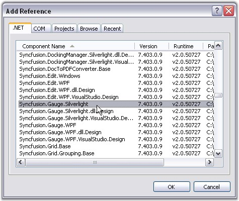

This section illustrates the step-by-step procedure to create a Silverlight application and deploy Essential Gauge to it. It has the following sections:
1. Creating a Silverlight Application
2. Deploying Essential Gauge to the Application
Creating a Silverlight Application
1. Open Microsoft Visual Studio. Go to File menu and click New Project.

Figure 10: New Project
2. In the New Project dialog, select Silverlight Application template, name the project and click OK.

Figure 11: New Silverlight application
A new Silverlight application is created.
Deploying Essential Gauge to the Application
1. Go to Solution Explorer. Right-click References folder and click Add Reference.

Figure 12: Solution Explorer
2. Add the following assemblies to the project References folder.
· Syncfusion.Gauge.Silverlight
· Syncfusion.Shared.Silverlight.dll
· System.Windows.Controls.dll

Figure 13: References folder
3. Add assembly reference in the XAML and C# code as follows:
|
[XAML]
xmlns:syncfusion="clr-namespace:Syncfusion.Windows.Gauge;assembly=Syncfusion.Gauge.Silverlight" |
|
[C#]
using Syncfusion.Windows.Gauge |
Essential Gauge is deployed in your application.
See Also
Creating a Circular Gauge, Creating a Linear Gauge, Creating a Digital Gauge, Creating a Rolling Gauge